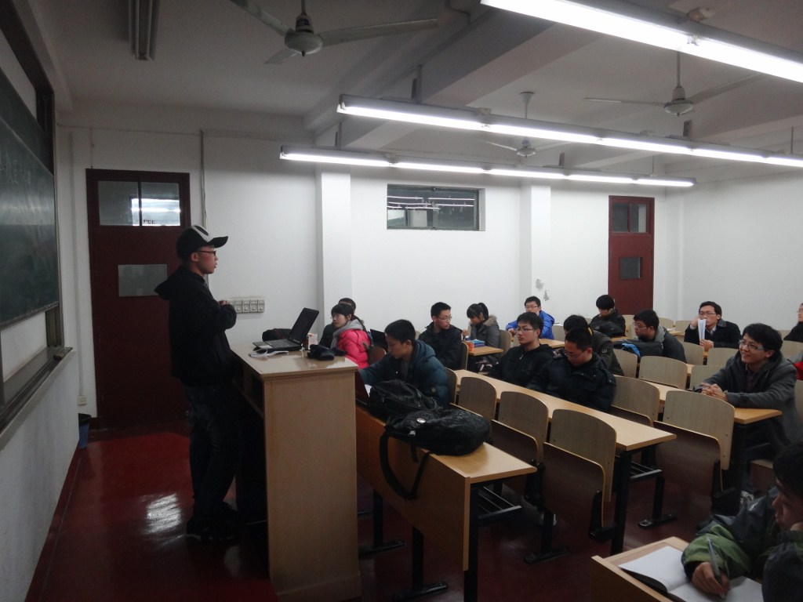
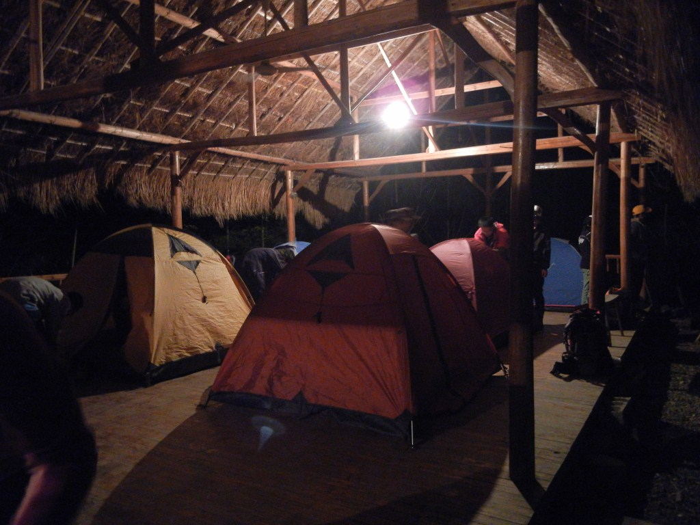
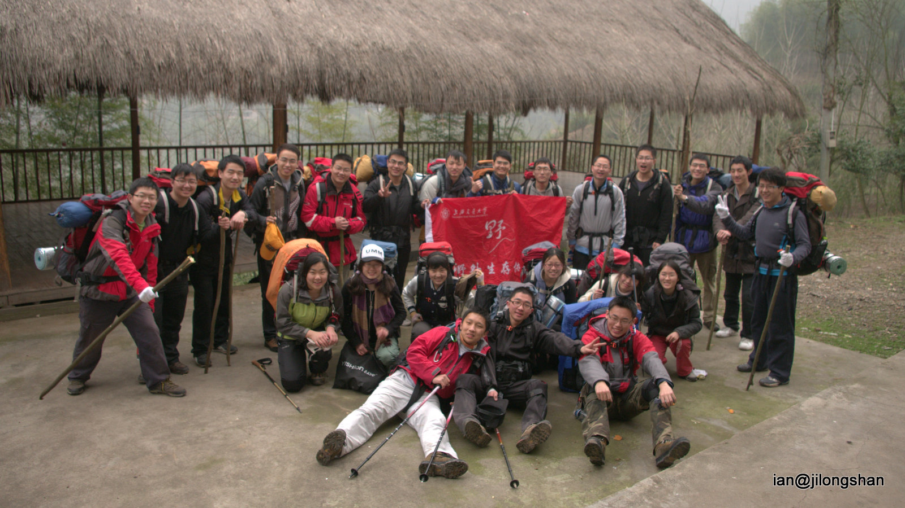
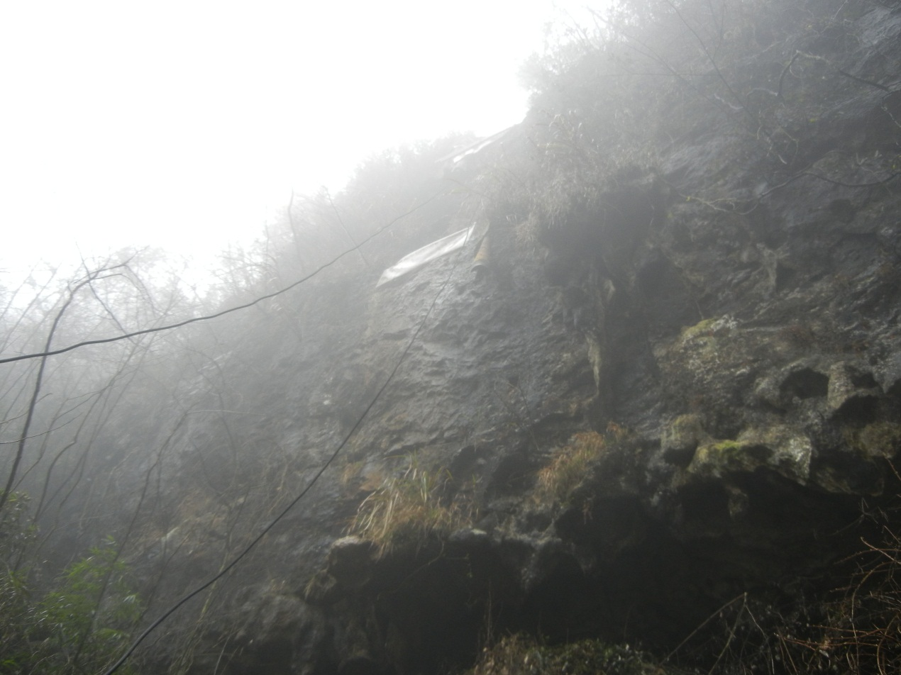
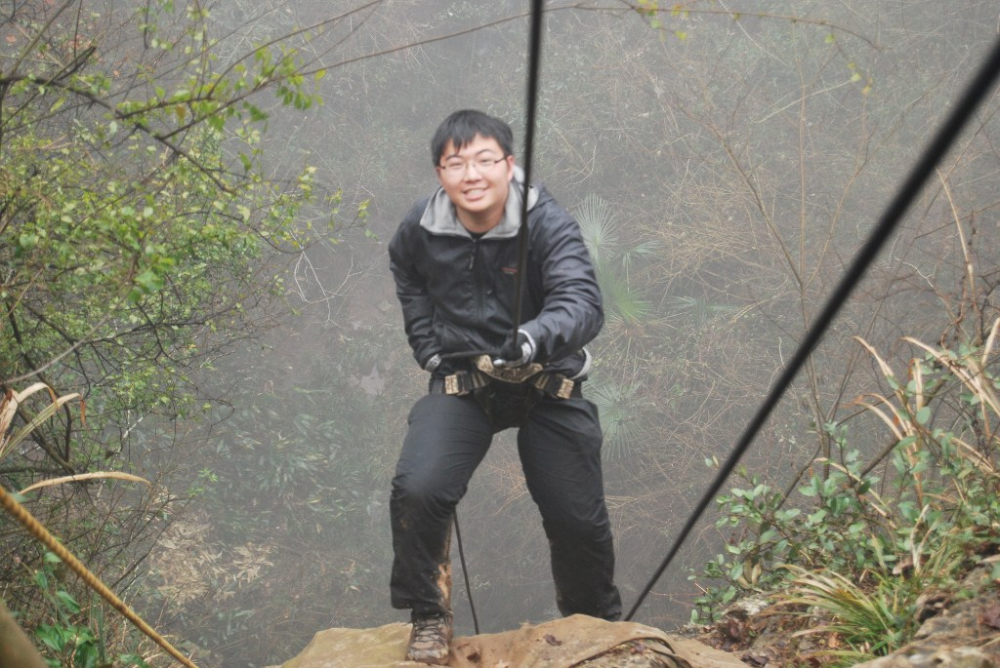
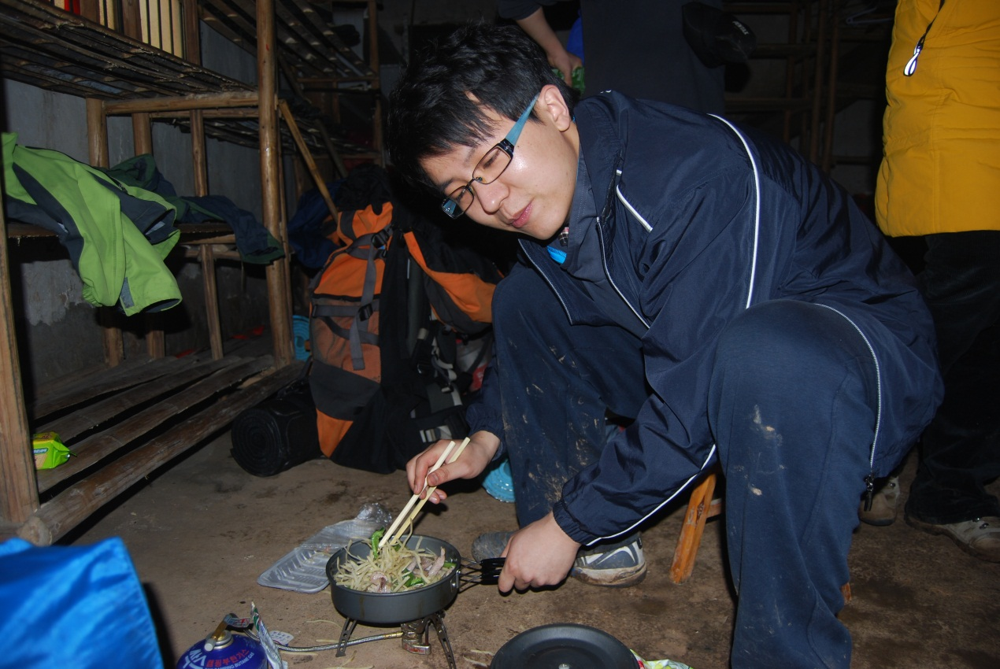
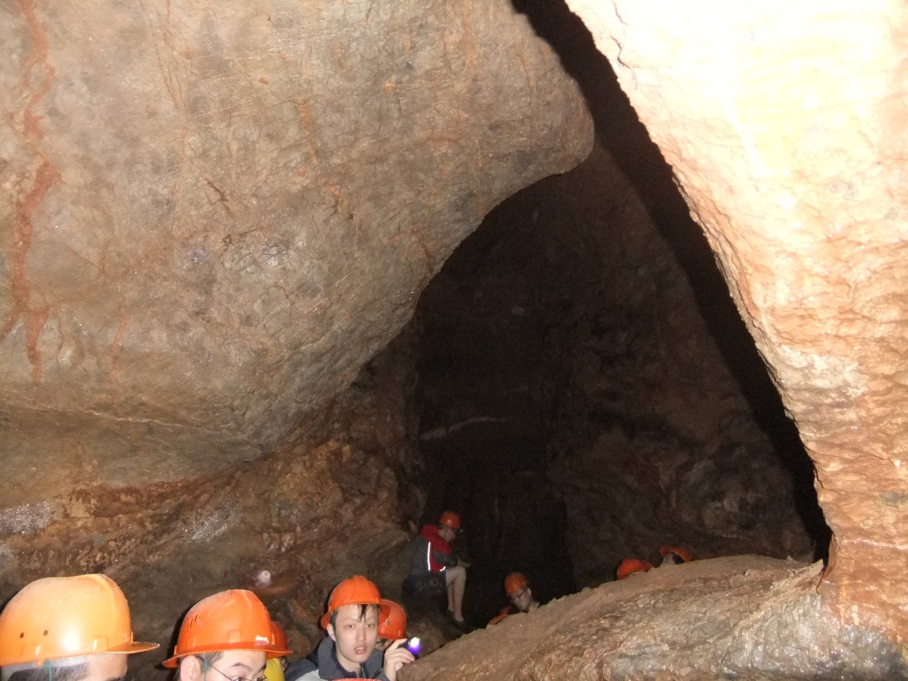
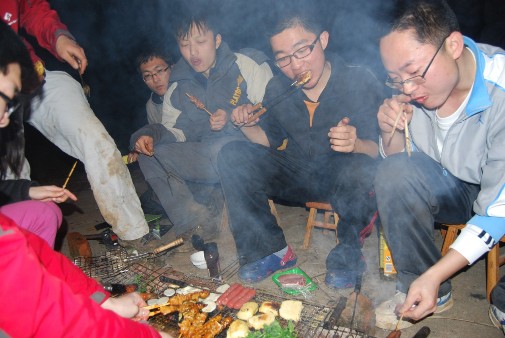
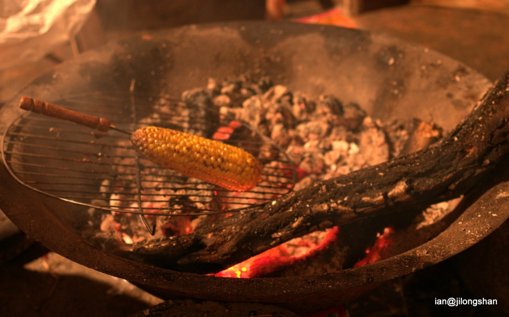
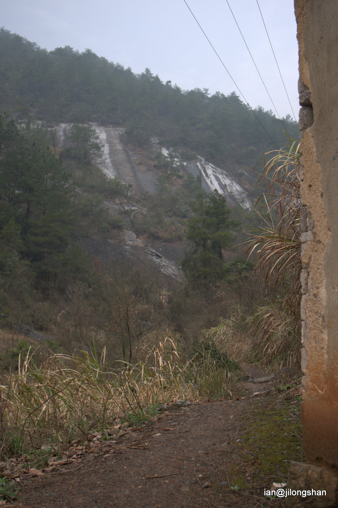

发信人: yanhao (一个人…), 信区: outdoor
标 题: 【合集】迟到的队记与总结1
发信站: 饮水思源 (2012年09月03日14:22:14 星期一), 站内信件
☆──────────────────────────────────────☆
alexgao (瓢子) 于 2012年06月15日21:59:31 星期五)
提到：
纪龙山游记总结
转眼间，这学期已经过去了，当我c++考试在一小时之内横扫，面带笑容的提前交卷的
时候，我第一个想到的是我的压队总结。那已经是3个月前的事情了，但当时的前期准备培
训带队回程后期都历历在目，没有忘掉一个细节，毕竟这是我第一次带队，感触颇深。
一、前期准备
好不夸张的讲，这次野外的前期准备做的挫的一逼，毫无优点可言。领队、副领队和我都
是没有太多带队经验的第一次。本该半个月前就订好的线路我们在临出发前第一个周末才
匆匆否决了由于没有到花期的新安江，以及把纪龙山作为本次野外的去处。介于纪龙山这
条线难度小项目精彩刺激，又加上已经与那边户外基地的经理取得联系，建议以后把那里
变成野协成熟的会员大水线，每学期必去。飞信召集后，报名火热，可能在提早截止情况
下已经有了50多人。但刷人刷的蹊跷，仅凭个人主观刷人，去老留幼的做法未免有些牵强
，希望在暑期能够编写出一套完整的野外前期准备流程规章，让领队更好的把握。领队性
格上的弱势在准备会上被体现并且放大，在闹哄哄加上各种迟到早退的准备会上，几乎没
有人听领队在讲台上讲的东西，真他娘的蛋疼，“以后领队压队副领队在出野外前必读领
队手册”不希望只是一句建议。由于各种原因有将近十个人秒退，准备会勉强撑得住台面
，在用掉所以替补名单之后还缺5个人的情况下，也就勉强维持入不敷出吧。这样的局面被
在野外的欢快气氛完全的埋没了，但我不得不说这次的带队不论从配合分工性格互补度来
讲都是存在隐患的。希望以后在登山队培养后备力量的时候多多考察。
 screen.width - 200){this.width = screen.width - 200}">
再后面的速降培训装备分发都还可以接受，保险这方面我弄的异常纠结，以后一定要有这
方面的领队培训，包车联系的也不靠谱，司机居然都不知道路，现查地图问路，在回程居
然被扣（非法营运）。这些都存在风险隐患，还在这回人品不错，没有出什么大乱子，望
这方面纸面上的东西。
还有这回没有带GPS，也没有航迹，希望以后不管是什么难度的线都做一下地图，标一下航
迹，供以后参考。实属遗憾。
二、野外
在3.13周五晚上车前才勉强填齐的责任书我就不多做评论了，下次切记。晚到一个多小时
的包车和不认路的司机这是无比气人。这个让我想到了浙东大峡谷的那一次，这么频繁的
在包车上面出事故根本不是偶然，并且损失的也是我们的时间与金钱，真的百废待兴。
下面说说这次活动，在车上做的破冰真的不错，把全车人的气氛都调动起来了，这个我想
领队手册里面讲的比较少，应该适当补充，各种车上面可以做的破冰游戏啊，各种自我介
绍，意在调动气氛让会员们尽快相互认识。也是在破冰上才发现这次野外年龄偏大，大部
分是研究生大四博士生、少许大123，比较奇葩。
费了半天劲找到了桐庐县的那个加油站，跟向导碰了头，然后开到了山脚下，下车卸包、
上路，夜里12点多，伸手不见五指，看着会员们光弱的可怜的手电与他们各种不安的神情
也只有把我的头灯开到最亮的份了。清点好人数，上好包，开拔向营地走去。第一次走夜
路走在队伍的最后面，时不时的看一眼黑漆漆的背后，各种不自在。山脚下营地是个大的
茅草棚，能容纳下全队人，得益于周三给组长做的装备培训，搭营地还算顺利，虽说断了
根帐干，但我觉得可能是帐篷的原因。给组长们开了个小会说明一下日程安排还有芝菁姐
布置的视频任务，就让所有人都回去睡了，我们三个最后检查了一下营地，关了灯，也进
了帐篷。当时应该是一点出头。
 screen.width - 200){this.width = screen.width - 200}">
早上五点四十起来熬姜汤，六点整队起床早饭冷餐配姜汤，拔营，七点半开拔不忘合影
 screen.width - 200){this.width = screen.width - 200}">
第一次挂着对讲机跟领队完毕来over去，的确蛮爽的，山路平缓，双杖走起异常轻松，背
着一包的腐败泳具也如履平地。由于体力不一加上这次女生不少，没过多久开始出现脱节
现象，适当调换各组顺序有所好转，每四十分钟不下包小憩片刻也相当给力。最后是一段
40度左右的爬升，感觉队伍明显放慢速度，行走技巧的缺失使得失误频发。两个多小时的
爬升就到达了纪龙山山顶的想到家，所有人卸了包，休息片刻就开拔前往四十米的岩降点
，我背着技术装备走在最后，向导布好绳，我蹭到最前面来到悬崖边，分发了安全带让前
几个穿上，向导和领队先下做保护，我在上面给自己打好保护就
 screen.width - 200){this.width = screen.width - 200}">
 screen.width - 200){this.width = screen.width - 200}">
开始检查安全带，指导下降。速降进行的很顺利，开始会员们都有点害怕，但慢慢就适应
熟练喜欢上了，降两三次的也大有人在。我在最后还来了一个下降转上升和一次跳降。岩
降的魅力就在于那份失重中的节奏感啊。
速降完返回了向导家，中午热餐走起，每组都不同程度腐败，吃的也是各种欢乐。
 screen.width - 200){this.width = screen.width - 200}">
中午午饭后休息片刻就穿好布鞋带上安全帽去探洞，溶洞共三层由于水大这次也只有第一
层的眼福了。队伍在进入溶洞不久明显被拉长分隔开，在洞里对讲机也不再那么给力，与
领队的联络时断时续，也终归怀着敬畏与惊奇全身而退。
 screen.width - 200){this.width = screen.width - 200}">
一个多小时的探洞过后在返回到想到家已经尽四点，在营地休息娱乐，开始野协文化建设
工作，屋里升起篝火狼人走起。另一撮人开始在当院搭篝火以及准备晚上的烧烤，晚间的
烧烤腐败至极，那一晚的精彩与疯狂就不做赘述了，只想说大家都抛掉了身居城市的那一
层外衣，回归了质朴的欢乐。
 screen.width - 200){this.width = screen.width - 200}">
 screen.width - 200){this.width = screen.width - 200}">
所以人一直狼人到很晚才搭帐篷睡去，由于在水泥地上没有打地钉，夜里的特大暴雨果断
的把所以帐篷淋湿了，在出去检查所有人都安好后回帐篷待到了天亮。第三天安排比较松
散，早餐在确保把所以食物都报销后，打好包，开拔下山。由于最近的阴雨天气，放弃了
精彩的虎跳崖绝壁，只能远远的赞叹它的雄壮了。
 screen.width - 200){this.width = screen.width - 200}">
下了山，跟纪龙山拓展基地的经理见了面，几番攀谈，他们一再表示出对我交市场的青睐
，希望与我们合作，互利双赢，建立长期合作关系。并亲切握手告别，上了包车踏上回程
的路。
回程的个人总结所有人做都可圈可点，唯一在意料之外的就是在高速出站口被拦下查出非
法营运的司机，被扣将近两个小时的同时也打乱了我们的安排，使得四点多才到交大，回
程的腐败午餐也直接变成了晚餐。一通大吃开怀畅饮加无理吐槽成了主旋律。同样，由于
计划不周，这顿饭花掉一千余元。最后算总账后几乎没有盈利。也只好评价这次旅途为“
成功的会员线与失败的带队人”了。
三、后期
后期工作不多，无非是约定固定时间还装备、催促照片视频上传。装备有一定程度的损毁
，实属不应该，对此承担责任与被会长大骂都全盘接受，也希望在暑期把装备维修保养提
上日程。
四、最后
作为第一次带队以及第一次写总结都没有做好，深表愧疚，野协是一个有崇高使命责
任信念的根基深厚的集体，需要每个野人的汗水与泪水。对野协人最高标准的要求不是苛
刻，是对过命兄弟的责任与关爱，是对野协精神的执著追求。
☆──────────────────────────────────────☆
cheche (旮旯旮旯旮旯) 于 2012年06月15日23:03:26 星期五)
提到：
啊学弟的沙发！
【 在 alexgao 的大作中提到: 】
: 纪龙山游记总结
: 转眼间，这学期已经过去了，当我c++考试在一小时之内横扫，面带笑容的提前..
: 时候，我第一个想到的是我的压队总结。那已经是3个月前的事情了，但当时的前期..
: 训带队回程后期都历历在目，没有忘掉一个细节，毕竟这是我第一次带队，感触颇深。
: 一、前期准备
: 好不夸张的讲，这次野外的前期准备做的挫的一逼，毫无优点可言。领队、副领队和..
: 是没有太多带队经验的第一次。本该半个月前就订好的线路我们在临出发前第一个周..
: 匆匆否决了由于没有到花期的新安江，以及把纪龙山作为本次野外的去处。介于纪龙..
: 条线难度小项目精彩刺激，又加上已经与那边户外基地的经理取得联系，建议以后把..
: 变成野协成熟的会员大水线，每学期必去。飞信召集后，报名火热，可能在提早截止..
: 下已经有了50多人。但刷人刷的蹊跷，仅凭个人主观刷人，去老留幼的做法未免有些..
: ，希望在暑期能够编写出一套完整的野外前期准备流程规章，让领队更好的把握。领..
: 格上的弱势在准备会上被体现并且放大，在闹哄哄加上各种迟到早退的准备会上，几..
: 有人听领队在讲台上讲的东西，真他娘的蛋疼，“以后领队压队副领队在出野外前必..
: 队手册”不希望只是一句建议。由于各种原因有将近十个人秒退，准备会勉强撑得住..
: ，在用掉所以替补名单之后还缺5个人的情况下，也就勉强维持入不敷出吧。这样的..
: 在野外的欢快气氛完全的埋没了，但我不得不说这次的带队不论从配合分工性格互补..
: 讲都是存在隐患的。希望以后在登山队培养后备力量的时候多多考察。
: http://bbs.sjtu.edu.cn../htm/pics/1339768199163210.jpg
: 再后面的速降培训装备分发都还可以接受，保险这方面我弄的异常纠结，以后一定要..
: (以下引言省略...)
☆──────────────────────────────────────☆
HYP (孤行) 于 2012年06月15日23:07:02 星期五)
提到：
看过了～
说点感受啊。
感觉像是队员写的抱怨帖而不是领队写的总结帖。
列出了若干问题，后面跟一句“希望改进”，这样的意义不大啊～～～
不过嘛，时隔这么长时间，还是把队记补上了，这一点是要大大的称赞的。
要是我的话，早就烂在肚子里了。。。。
【 在 alexgao 的大作中提到: 】
: 纪龙山游记总结
: 转眼间，这学期已经过去了，当我c++考试在一小时之内横扫，面带笑容的提前..
: 时候，我第一个想到的是我的压队总结。那已经是3个月前的事情了，但当时的前期..
: 训带队回程后期都历历在目，没有忘掉一个细节，毕竟这是我第一次带队，感触颇深。
: 一、前期准备
: 好不夸张的讲，这次野外的前期准备做的挫的一逼，毫无优点可言。领队、副领队和..
: 是没有太多带队经验的第一次。本该半个月前就订好的线路我们在临出发前第一个周..
: 匆匆否决了由于没有到花期的新安江，以及把纪龙山作为本次野外的去处。介于纪龙..
: 条线难度小项目精彩刺激，又加上已经与那边户外基地的经理取得联系，建议以后把..
: 变成野协成熟的会员大水线，每学期必去。飞信召集后，报名火热，可能在提早截止..
: 下已经有了50多人。但刷人刷的蹊跷，仅凭个人主观刷人，去老留幼的做法未免有些..
: ，希望在暑期能够编写出一套完整的野外前期准备流程规章，让领队更好的把握。领..
: 格上的弱势在准备会上被体现并且放大，在闹哄哄加上各种迟到早退的准备会上，几..
: 有人听领队在讲台上讲的东西，真他娘的蛋疼，“以后领队压队副领队在出野外前必..
: 队手册”不希望只是一句建议。由于各种原因有将近十个人秒退，准备会勉强撑得住..
: ，在用掉所以替补名单之后还缺5个人的情况下，也就勉强维持入不敷出吧。这样的..
: 在野外的欢快气氛完全的埋没了，但我不得不说这次的带队不论从配合分工性格互补..
: 讲都是存在隐患的。希望以后在登山队培养后备力量的时候多多考察。
: http://bbs.sjtu.edu.cn../htm/pics/1339768199163210.jpg
: 再后面的速降培训装备分发都还可以接受，保险这方面我弄的异常纠结，以后一定要..
: (以下引言省略...)
☆──────────────────────────────────────☆
zzmax (zzmaxu) 于 2012年06月16日10:34:41 星期六)
提到：
嗯，终于写出来了啊。。
以后这些东西都需要自己去努力，不是希望怎么就能怎么样的。
你也是野协的一份子。~我更希望你能提供仔细思考后的解决方案，这样才有提高
【 在 alexgao 的大作中提到: 】
: 纪龙山游记总结
: 转眼间，这学期已经过去了，当我c++考试在一小时之内横扫，面带笑容的提前..
: 时候，我第一个想到的是我的压队总结。那已经是3个月前的事情了，但当时的前期..
: 训带队回程后期都历历在目，没有忘掉一个细节，毕竟这是我第一次带队，感触颇深。
: 一、前期准备
: 好不夸张的讲，这次野外的前期准备做的挫的一逼，毫无优点可言。领队、副领队和..
: 是没有太多带队经验的第一次。本该半个月前就订好的线路我们在临出发前第一个周..
: 匆匆否决了由于没有到花期的新安江，以及把纪龙山作为本次野外的去处。介于纪龙..
: 条线难度小项目精彩刺激，又加上已经与那边户外基地的经理取得联系，建议以后把..
: 变成野协成熟的会员大水线，每学期必去。飞信召集后，报名火热，可能在提早截止..
: 下已经有了50多人。但刷人刷的蹊跷，仅凭个人主观刷人，去老留幼的做法未免有些..
: ，希望在暑期能够编写出一套完整的野外前期准备流程规章，让领队更好的把握。领..
: 格上的弱势在准备会上被体现并且放大，在闹哄哄加上各种迟到早退的准备会上，几..
: 有人听领队在讲台上讲的东西，真他娘的蛋疼，“以后领队压队副领队在出野外前必..
: 队手册”不希望只是一句建议。由于各种原因有将近十个人秒退，准备会勉强撑得住..
: ，在用掉所以替补名单之后还缺5个人的情况下，也就勉强维持入不敷出吧。这样的..
: 在野外的欢快气氛完全的埋没了，但我不得不说这次的带队不论从配合分工性格互补..
: 讲都是存在隐患的。希望以后在登山队培养后备力量的时候多多考察。
: http://bbs.sjtu.edu.cn../htm/pics/1339768199163210.jpg
: 再后面的速降培训装备分发都还可以接受，保险这方面我弄的异常纠结，以后一定要..
: (以下引言省略...)
☆──────────────────────────────────────☆
CanonFlying (恰例甲沽白) 于 2012年06月16日12:42:44 星期六)
提到：
我觉得我觉得我觉得吧
其实可以提出有意义的问题也是蛮好的
也许一个人发现了问题然后没有发现解决的办法
然后另一个人看见了拍拍脑袋就想到了一个好办法
近来水贴略多所以这种文章看着还是挺开心的 - -
【 在 HYP 的大作中提到: 】
: 看过了～
: 说点感受啊。
: 感觉像是队员写的抱怨帖而不是领队写的总结帖。
: 列出了若干问题，后面跟一句“希望改进”，这样的意义不大啊～～～
: 不过嘛，时隔这么长时间，还是把队记补上了，这一点是要大大的称赞的。
: 要是我的话，早就烂在肚子里了。。。。
: (以下引言省略...)
☆──────────────────────────────────────☆
yanhao (一个人…) 于 2012年06月16日19:45:08 星期六)
提到：
re…
多想想解决方法。
【 在 HYP 的大作中提到: 】
: 看过了～
: 说点感受啊。
: 感觉像是队员写的抱怨帖而不是领队写的总结帖。
: 列出了若干问题，后面跟一句“希望改进”，这样的意义不大啊～～～
: 不过嘛，时隔这么长时间，还是把队记补上了，这一点是要大大的称赞的。
: 要是我的话，早就烂在肚子里了。。。。
: (以下引言省略...)
|